传统图像处理
传统图像处理
1.卷积
1.1卷积的作用
2维卷积在图像处理中非常常见，它的主要作用有：
提取图像的特征：比如CNN中的各个卷积层；通过卷积也可以提取出原图的边缘信息等等
对图像进行操作：通过特定的卷积核，比如高斯核(权重服从2维高斯分布)、平均滤波核、中值滤波核等等
对图像求导
1.2二维卷积的分解
可以通过将2维卷积分解成2个一维卷积来减少计算量以及参数
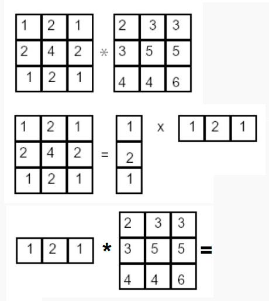2.噪声和滤波
2.1常见的噪声
- 椒盐噪声、脉冲噪声、高斯噪声…..
2.2常见滤波方法
- 高斯滤波、均值滤波、中值滤波….
3.边缘检测
图像的边缘指的是亮度发生突变的区域。该线条的X方向就有2个边缘点。
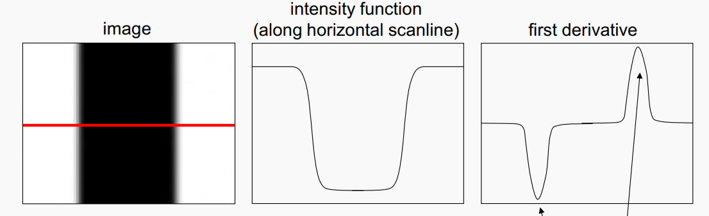
可以通过对图像求偏导来判断亮度是否发生了突变，进而判断该区域是否是指定方向的边缘。
3.1通过一阶偏导检测边缘
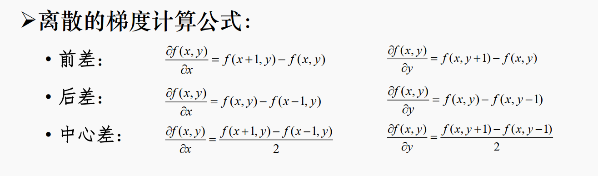
由于图像是2D的数字信号，因此可以采用这种差分来代替求导。同时，又可以用一维的卷积来替代对X或Y来求偏导。
X：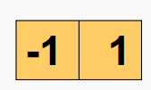，结果：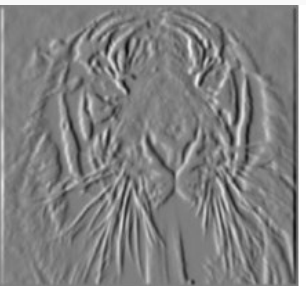（显示出了Y方向的边缘）
Y：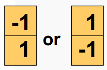，结果：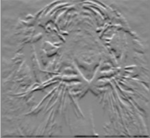（显示出了X方向的边缘）
对X，Y方向偏导的结果求平方根即可得到整个图像的边缘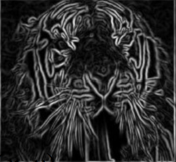
注意 ：
偏导只是一个结果，到底是不是边缘还得通过偏导的值来判断。
边缘检测本质上就是对图像沿某个方向求个偏导，它的输出图每个像素的值就是**原图求偏导的幅值(gradient magnitude)**。因为原图中边缘地区求偏导后结果较大，所以可视化就比较明显，而不是边缘的地区求偏导结果很小，可视化也不是很明显。
3.2其他的一些求偏导的卷积核
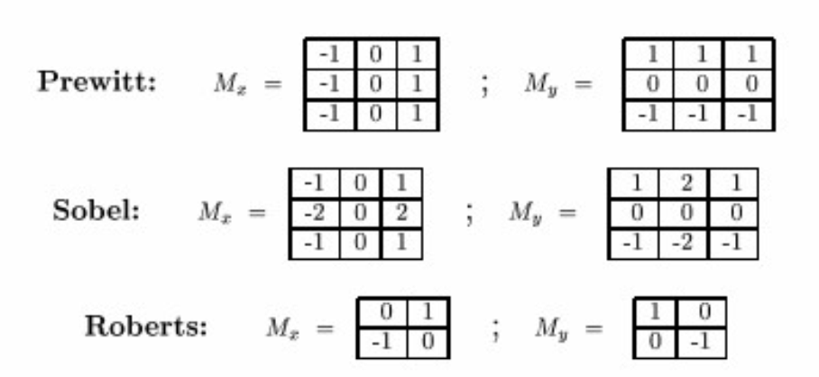
Prewitt：使用该像素相邻点的梯度和作为梯度值，防止了某个异常点。
Sobel：可以分解成[1,2,1]和[-1,0,1]这2个一维卷积核，相当于在该方向先用高斯核进行平滑，再求偏导。
Roberts：求45度方向的偏导
这些卷积核都求得是0方向的边缘
3.3Canny边缘检测算法
边缘通常得是单像素宽的，然而用以上方法求出的边缘不一定就是单像素宽的，因此可以通过使用Canny边缘检测来得到单像素宽的边缘。
步骤：
对原图进行高斯滤波，然后求偏导
求出每个像素的梯度幅值以及梯度
对上一步的结果(梯度幅值)进行非极大值抑制
先对幅值用高通滤波器，滤掉噪声点，再用低通滤波器恢复边缘上的一些点，连接边缘
3.4利用二阶偏导检测边缘
边缘图可以看成一阶偏导取最大值的区域，也可以看成二阶偏导为0的区域。
因此边缘可以通过对原图求二阶偏导+过0点搜索来获得。比如用拉普拉斯算子：
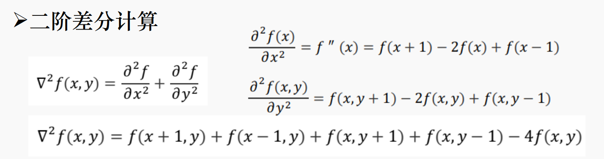
变成卷积的形式就是这样的：
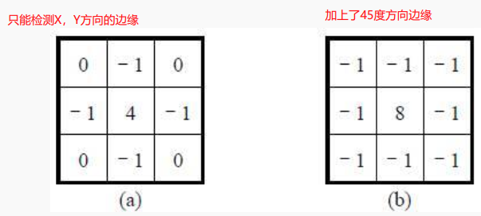4.直线拟合
4.1方法适用场景
要拟合的所有点都在直线上：(全)最小二乘法
要拟合的点有少量噪声点：Robust fitting
要拟合的点有大量噪声点：RANSAC
要拟合多条线：RANSAC、Hough Transform
4.2最小二乘法
现在要根据一些离散点拟合直线l:y=mx+b
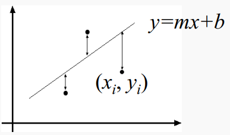
本质上就是机器学习里那套方法，先构造损失函数来评估当前的参数的拟合效果，再通过不断迭代求出损失最小的一组参数作为拟合结果。
最小二乘法的损失函数：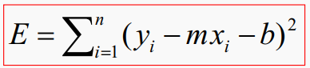，即离散点与直线的y方向距离
由于该损失函数关于B=[m,b]是可导的，因此不需要迭代，直接求出偏导为0的B就可以了。
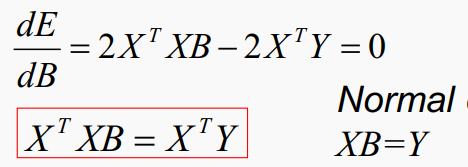通过解出B，即可得到最终参数。
4.3全最小二乘
普通最小二乘的缺点：
- 不能描述垂直线
解决方法：把损失函数定义为离散点与直线间的距离
4.4鲁棒估计
(全)最小二乘的缺点：要拟合的离散点必须全在直线上，如果包含了噪声点，对拟合的结果影响很大。
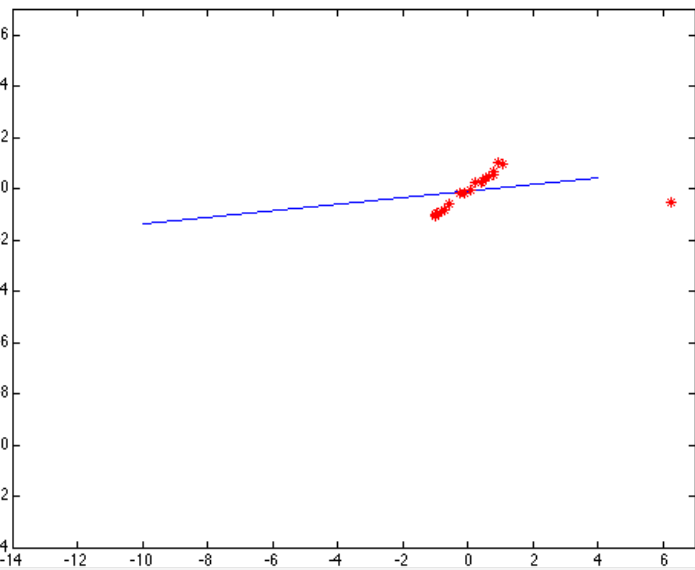解决方法：对离散点与直线间的距离做一个非线性变换再作为损失函数，本质上就是对每个离散点的损失函数进行一个限幅，以减少噪声点对整体的影响。
非线性变换：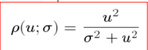
4.5随机采样一致性(RANSAC)
该方法不仅可以拟合单条直线，也可拟合多条直线；甚至是一些仿射变换
方法：
首先随机采样s个点，直线的话通常是2个
选择一个门限t，然后计算出所有点到这s个点之间的距离，并过滤掉大于t的点
计算出门限t内的点的个数，作为该直线的“票数”
- 重复N次，最后票数最多的点作为拟合结果，或者设置票数阈值d，大于该阈值的都算直线
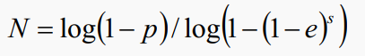
需要指定的参数：
每次采样点的个数
距离门限t
最后输出直线的内点率p
重复次数N
票数阈值d
由于外点率e不知道，所以N通常无法直接指定，一般使用迭代的方法动态更新N
通常RANSAC的结果不是拟合效果最好的线，一般还要用一次最小二乘拟合
4.6Hough变换
通过“投票”的方法进行直线拟合。总所周知:在XY坐标系下的一条直线y=mx+b转移到参数坐标系MB下对应着一个点。同理原图中的一个点对应与参数空间的一条线。
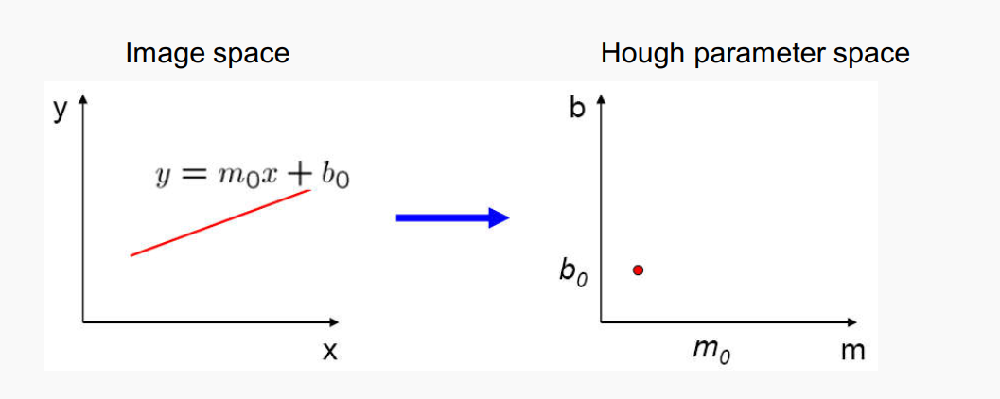
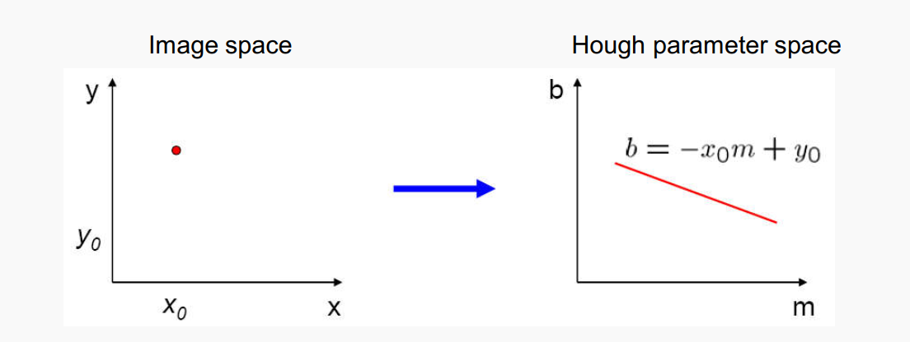
Hough投票的原理就是：将原图中的所有点映射到参数空间中，如果该点对应在参数空间的直线L经过了参数空间中一点(m1,b1)，则(m1,b1)的票数+1.最后可以通过找参数空间票数最多的点来确定XY坐标系下的直线方程。
4.6.1(m,b)参数空间存在的问题
描述垂直的直线需要无限大的m
搜索票数时的边界m的大小不好确定
解决方法：不映射到(m,b)空间而映射到(p，θ)参数空间
算法流程：H()是票数
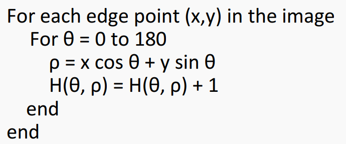由于参数空间的横坐标θ是有界的，因此整个投票、计票环节都是有界的。
4.6.2Hough变换其他用途
Hough变换不止可以用来检测单条直线，通过票数的大小可以检测到多条直线，比如这个四边形的票数图可视化后就有4个局部极大值点，对应4条不同的直线。
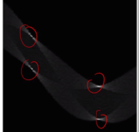Hough同时也可以检测圆形，不过参数空间不再是二维而是三维的。
5.图像的特征
在计算机视觉中，我们通常需要匹配多张不同图片中的特征，这样我们就可以利用多张图片来获取信息。我们提取的特征必须具有：独一无二可识别的特点。
通常以下面这些作为特征：
边缘
Key Points(特征点)
blob(一块连通域)
OpenCV集成了许多特征检测的算法，都在2D Features Framework这个模块内
OpenCV定义的特征为：关键点(包含x、y、尺度、方向) + 特征描述子(SIFT中为关键点周围像素的梯度直方图)，因为特征是个抽象的概念，一般指的都是一块区域，比如人的眼睛，而区域又是基于一个关键点的。
5.1key point
5.1.1Harris角点检测
角点对于光照、平移、旋转都有一定的不变性，但对于尺度不具有不变性。
判断一个点是否是角点通常要结合其局部特征，类似于卷积那样。对于角点的判断需要对像素指定一个邻域窗口，计算Harris矩阵
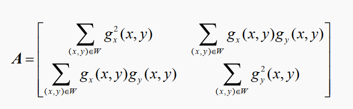矩阵的物理意义就是空间变换，空间变换可以看成旋转+拉伸
特征向量的物理意义：空间变换后方向不变的向量，指示了该线性变换中拉伸的方向。同时也是空间变换后坐标系的轴。
特征值的物理意义：反映了线性变换中拉伸部分的拉伸率。如果某个特征值很大的话，说明线性变换后所有坐标在该特征值所对应轴的方向坐标都很大。反之若特征值很小，线性变换后所有点在该特征值对应轴方向的坐标就都变得趋于0，那么该轴的信息也就变少了。所谓主成分分析及是舍去那些特征值很小的轴，把数据投影到坐标更大，含信息更多的轴上。
因此如果A的2个特征值都较大的话，说明经过A空间变换后的点的X，Y坐标都比较大，即在X，Y方向的偏导都很大，说明A就是角点。
在实际使用时，判断特征值是大还是小不方便，因此(1)式这个响应函数计算，然后设定合适的阈值(这个阈值和求A时所指定的窗口大小W有关)，进行非极大值抑制得到角点。k是自己设定的超参数，一般为0.04~0.06
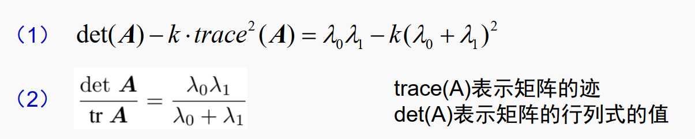
5.1.2 SURF算法
5.1.3 SIFT算法
SIFT算法是一种用于图像特征提取和匹配的算法，基本思想是，通过检测图像中的关键点，提取这些关键点周围的局部特征，然后对这些特征进行描述，提供一种具有尺度不变性和旋转不变性的特征描述符，从而实现图像的匹配和识别。
具体来说，SIFT算法包括以下步骤：
1.关键点定位
首先求出图像的尺度金字塔，然后根据不同尺度下高斯二阶偏导的响应来确定具有尺度不变特性的关键点(因为高斯二阶偏导在合适尺度时会达到一个极值)，并且求出相应的尺度
2.特征描述
通过关键点周围像素点的梯度方向和幅值，构建关键点的特征的描述子。使用直方图统计关键点周围像素点的梯度方向和幅值，生成一个128维的向量来描述关键点的局部特征。
3.特征匹配
将两幅图像的SIFT特征点进行比较，计算它们之间的相似度。SIFT算法通常使用最近邻匹配方法来比较两幅图像的SIFT特征，如果两个特征点之间的距离小于一定的阈值，则认为这两个特征点是匹配的。
总结： 虽然这个算法首先提取了关键点，但该算法的目的是找出特征而不仅仅是关键点，图像的特征通常指的是一片区域，所以后面又提出了一种具有尺度、旋转不变性的描述图像特征的方法。特征匹配通常用于同一物体的不同视角找特征，而不是用来区分不同物体。